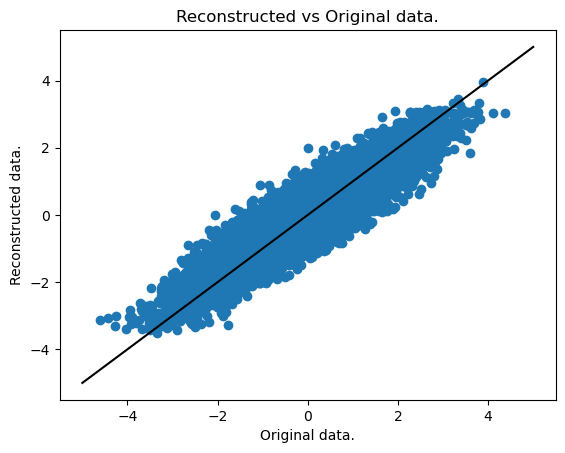
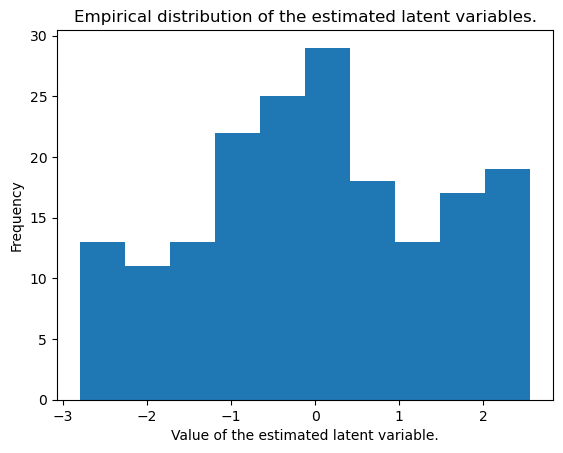
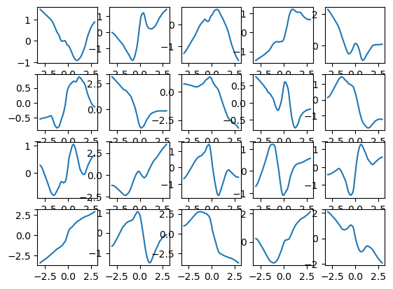

import matplotlib.pyplot as plt
import numpy as np
import pandas as pd
import tensorflow as tf
from tensorflow import keras
from tensorflow.keras import layersVAE Implementation for Nonlinear Latent Variable Modeling
This is variational auto-encoder (VAE) implementation using tensorflow of the following non-linear latent variable model with one latent variable:
\[ Z \sim N(0, 1)\\ X_j | Z = g_j(Z) + \epsilon_j\\ \epsilon_j \sim N(0, \sigma_j^2), \quad j=1, \dots, p \]
This model can be likened to a non-linar factor analysis model, or, with the assumption that \(\sigma_j = \sigma \quad \forall j\), to a one-dimensional non-linear probabilistic principal component analysis (PPCA) model.
Given some observed data \(\{X^{(i)}\}_{i=1}^n\) with \(X^{(i)} \in \mathbb R^p\), the goal is to estimate the functions \(g_j: \mathbb R \to \mathbb R\).
Load data
We load a toy dataset with dimensions \(n=100, p=100\).
data = pd.read_csv("./data/q1/data_1_200_100_1.csv")
data = np.array(data, dtype='float32')
data = np.expand_dims(data, axis=-1)
data_train = data[:int(data.shape[0]*.9)]
data_test = data[int(data.shape[0]*.9):]data_train.shape(180, 100, 1)Create the sampling layer
class Sampling(layers.Layer):
"""Uses (z_mean, z_log_var) to sample z, the vector encoding a digit."""
def call(self, inputs):
z_mean, z_log_var = inputs
batch = tf.shape(z_mean)[0]
dim = tf.shape(z_mean)[1]
epsilon = tf.keras.backend.random_normal(shape=(batch, dim))
return z_mean + tf.exp(0.5 * z_log_var) * epsilonCreate the encoder
The encoder encodes the observed variables into the parameters of the posterior distribution of \(Z^{(i)}|Y^{(i)}\). Both the mean and variance share the first layer.
latent_dim = 1
encoder_inputs = keras.Input(shape=data_train.shape[1:])
x = layers.Flatten()(encoder_inputs)
x = layers.Dense(100, activation="relu")(x)
z_mean = layers.Dense(100, activation="relu")(x)
z_mean = layers.Dense(100, activation="relu")(x)
z_mean =layers.Dense(latent_dim, name="z_mean", activation="linear")(z_mean)
z_log_var = layers.Dense(100, activation="relu")(x)
z_log_var = layers.Dense(100, activation="relu")(x)
z_log_var = layers.Dense(latent_dim, name="z_log_var", activation="linear")(z_log_var)
z = Sampling()([z_mean, z_log_var])
encoder = keras.Model(encoder_inputs, [z_mean, z_log_var, z], name="encoder")
encoder.summary()Model: "encoder"
__________________________________________________________________________________________________
Layer (type) Output Shape Param # Connected to
==================================================================================================
input_1 (InputLayer) [(None, 100, 1)] 0 []
flatten (Flatten) (None, 100) 0 ['input_1[0][0]']
dense (Dense) (None, 100) 10100 ['flatten[0][0]']
dense_2 (Dense) (None, 100) 10100 ['dense[0][0]']
dense_4 (Dense) (None, 100) 10100 ['dense[0][0]']
z_mean (Dense) (None, 1) 101 ['dense_2[0][0]']
z_log_var (Dense) (None, 1) 101 ['dense_4[0][0]']
sampling (Sampling) (None, 1) 0 ['z_mean[0][0]',
'z_log_var[0][0]']
==================================================================================================
Total params: 30,502
Trainable params: 30,502
Non-trainable params: 0
__________________________________________________________________________________________________Create the Decoder
The decoder has to be flexible enough to be able to model the functions \(g_j\), which models the conditional means of the responses. On top of that, the decoder models the residual variances \(\sigma_j\).
latent_inputs = keras.Input(shape=(latent_dim,))
x = layers.Dense(50, activation="relu")(latent_inputs)
x = layers.Dense(100, activation="relu")(x)
log_var = layers.Dense(100, activation="relu")(x)
log_var = layers.Dense(100, activation="linear")(log_var)
log_var = layers.Reshape(data_train.shape[1:])(log_var)
x_output = layers.Dense(100, activation="relu")(x)
x_output = layers.Dense(100, activation="linear")(x_output)
x_output = layers.Reshape(data_train.shape[1:])(x_output)
decoder = keras.Model(latent_inputs, [x_output, log_var], name="decoder")
decoder.summary()Model: "decoder"
__________________________________________________________________________________________________
Layer (type) Output Shape Param # Connected to
==================================================================================================
input_2 (InputLayer) [(None, 1)] 0 []
dense_5 (Dense) (None, 50) 100 ['input_2[0][0]']
dense_6 (Dense) (None, 100) 5100 ['dense_5[0][0]']
dense_9 (Dense) (None, 100) 10100 ['dense_6[0][0]']
dense_7 (Dense) (None, 100) 10100 ['dense_6[0][0]']
dense_10 (Dense) (None, 100) 10100 ['dense_9[0][0]']
dense_8 (Dense) (None, 100) 10100 ['dense_7[0][0]']
reshape_1 (Reshape) (None, 100, 1) 0 ['dense_10[0][0]']
reshape (Reshape) (None, 100, 1) 0 ['dense_8[0][0]']
==================================================================================================
Total params: 45,600
Trainable params: 45,600
Non-trainable params: 0
__________________________________________________________________________________________________Create the variational autoencoder
The variational auto-encoder (VAE) is itself a keras.Model object. It consists of the encoder and decoder layers, a specialized train_step as well of some specialized metrics to keep track of our progress.
class VAE(keras.Model):
def __init__(self, encoder, decoder, **kwargs):
super().__init__(**kwargs)
self.encoder = encoder
self.decoder = decoder
self.total_loss_tracker = keras.metrics.Mean(name="total_loss")
self.reconstruction_loss_tracker = keras.metrics.Mean(
name="reconstruction_loss"
)
self.kl_loss_tracker = keras.metrics.Mean(name="kl_loss")
@property
def metrics(self):
return [
self.total_loss_tracker,
self.reconstruction_loss_tracker,
self.kl_loss_tracker,
]
def train_step(self, data):
with tf.GradientTape() as tape:
z_mean, z_log_var, z = self.encoder(data)
reconstruction, logvar = self.decoder(z)
logvar = tf.reduce_mean(logvar, axis=1, keepdims=True)
# Reconstruction loss (including the residual variances)
reconstruction_loss = 0.5 * tf.reduce_mean(tf.reduce_sum((data - reconstruction)**2 * tf.math.exp(-logvar) + logvar + tf.math.log(2. * np.pi), axis=1))
# ELBO loss, approximating the posterior with a Gaussian.
kl_loss = -0.5 * (1 + z_log_var - tf.square(z_mean) - tf.exp(z_log_var))
kl_loss = tf.reduce_mean(tf.reduce_sum(kl_loss, axis=1))
total_loss = reconstruction_loss + kl_loss
grads = tape.gradient(total_loss, self.trainable_weights)
self.optimizer.apply_gradients(zip(grads, self.trainable_weights))
self.total_loss_tracker.update_state(total_loss)
self.reconstruction_loss_tracker.update_state(reconstruction_loss)
self.kl_loss_tracker.update_state(kl_loss)
return {
"total_loss": self.total_loss_tracker.result(),
"reconstruction_loss": self.reconstruction_loss_tracker.result(),
"kl_loss": self.kl_loss_tracker.result(),
}vae = VAE(encoder, decoder)
vae.compile(optimizer=keras.optimizers.Adam())
vae.fit(data_train, epochs=200)Epoch 1/200
6/6 [==============================] - 5s 5ms/step - total_loss: 159.4694 - reconstruction_loss: 158.8095 - kl_loss: 0.6599
Epoch 2/200
6/6 [==============================] - 0s 6ms/step - total_loss: 157.3188 - reconstruction_loss: 156.3394 - kl_loss: 0.9794
Epoch 3/200
6/6 [==============================] - 0s 6ms/step - total_loss: 154.5943 - reconstruction_loss: 153.0545 - kl_loss: 1.5398
Epoch 4/200
6/6 [==============================] - 0s 6ms/step - total_loss: 152.1033 - reconstruction_loss: 150.5485 - kl_loss: 1.5548
Epoch 5/200
6/6 [==============================] - 0s 6ms/step - total_loss: 147.7574 - reconstruction_loss: 144.8417 - kl_loss: 2.9157
Epoch 6/200
6/6 [==============================] - 0s 7ms/step - total_loss: 142.2038 - reconstruction_loss: 138.8096 - kl_loss: 3.3943
Epoch 7/200
6/6 [==============================] - 0s 7ms/step - total_loss: 136.3394 - reconstruction_loss: 133.4327 - kl_loss: 2.9067
Epoch 8/200
6/6 [==============================] - 0s 7ms/step - total_loss: 132.0306 - reconstruction_loss: 129.1889 - kl_loss: 2.8417
Epoch 9/200
6/6 [==============================] - 0s 7ms/step - total_loss: 128.4884 - reconstruction_loss: 125.7331 - kl_loss: 2.7553
Epoch 10/200
6/6 [==============================] - 0s 6ms/step - total_loss: 126.0616 - reconstruction_loss: 123.3086 - kl_loss: 2.7530
Epoch 11/200
6/6 [==============================] - 0s 6ms/step - total_loss: 123.9195 - reconstruction_loss: 121.1649 - kl_loss: 2.7547
Epoch 12/200
6/6 [==============================] - 0s 5ms/step - total_loss: 123.4685 - reconstruction_loss: 120.7576 - kl_loss: 2.7109
Epoch 13/200
6/6 [==============================] - 0s 7ms/step - total_loss: 121.9943 - reconstruction_loss: 119.0857 - kl_loss: 2.9086
Epoch 14/200
6/6 [==============================] - 0s 6ms/step - total_loss: 121.4584 - reconstruction_loss: 118.4306 - kl_loss: 3.0278
Epoch 15/200
6/6 [==============================] - 0s 6ms/step - total_loss: 121.2427 - reconstruction_loss: 118.3778 - kl_loss: 2.8650
Epoch 16/200
6/6 [==============================] - 0s 6ms/step - total_loss: 120.2809 - reconstruction_loss: 117.4173 - kl_loss: 2.8635
Epoch 17/200
6/6 [==============================] - 0s 5ms/step - total_loss: 119.4762 - reconstruction_loss: 116.6165 - kl_loss: 2.8597
Epoch 18/200
6/6 [==============================] - 0s 5ms/step - total_loss: 118.1459 - reconstruction_loss: 115.3286 - kl_loss: 2.8172
Epoch 19/200
6/6 [==============================] - 0s 13ms/step - total_loss: 117.4240 - reconstruction_loss: 114.6200 - kl_loss: 2.8040
Epoch 20/200
6/6 [==============================] - 0s 9ms/step - total_loss: 117.1775 - reconstruction_loss: 114.3382 - kl_loss: 2.8392
Epoch 21/200
6/6 [==============================] - 0s 7ms/step - total_loss: 116.7512 - reconstruction_loss: 113.8932 - kl_loss: 2.8580
Epoch 22/200
6/6 [==============================] - 0s 8ms/step - total_loss: 114.6956 - reconstruction_loss: 111.8335 - kl_loss: 2.8621
Epoch 23/200
6/6 [==============================] - 0s 11ms/step - total_loss: 114.0700 - reconstruction_loss: 111.2253 - kl_loss: 2.8447
Epoch 24/200
6/6 [==============================] - 0s 8ms/step - total_loss: 111.6568 - reconstruction_loss: 108.7404 - kl_loss: 2.9164
Epoch 25/200
6/6 [==============================] - 0s 9ms/step - total_loss: 110.1693 - reconstruction_loss: 107.2955 - kl_loss: 2.8737
Epoch 26/200
6/6 [==============================] - 0s 7ms/step - total_loss: 108.0621 - reconstruction_loss: 105.1189 - kl_loss: 2.9431
Epoch 27/200
6/6 [==============================] - 0s 11ms/step - total_loss: 105.9520 - reconstruction_loss: 102.7703 - kl_loss: 3.1818
Epoch 28/200
6/6 [==============================] - 0s 10ms/step - total_loss: 104.2761 - reconstruction_loss: 101.0551 - kl_loss: 3.2210
Epoch 29/200
6/6 [==============================] - 0s 11ms/step - total_loss: 102.5817 - reconstruction_loss: 99.3796 - kl_loss: 3.2020
Epoch 30/200
6/6 [==============================] - 0s 18ms/step - total_loss: 100.3066 - reconstruction_loss: 97.1519 - kl_loss: 3.1548
Epoch 31/200
6/6 [==============================] - 0s 9ms/step - total_loss: 99.7117 - reconstruction_loss: 96.4821 - kl_loss: 3.2297
Epoch 32/200
6/6 [==============================] - 0s 10ms/step - total_loss: 97.7306 - reconstruction_loss: 94.2878 - kl_loss: 3.4428
Epoch 33/200
6/6 [==============================] - 0s 9ms/step - total_loss: 96.3645 - reconstruction_loss: 92.9167 - kl_loss: 3.4479
Epoch 34/200
6/6 [==============================] - 0s 11ms/step - total_loss: 95.0677 - reconstruction_loss: 91.7078 - kl_loss: 3.3598
Epoch 35/200
6/6 [==============================] - 0s 9ms/step - total_loss: 94.1247 - reconstruction_loss: 90.6508 - kl_loss: 3.4740
Epoch 36/200
6/6 [==============================] - 0s 11ms/step - total_loss: 94.0376 - reconstruction_loss: 90.4024 - kl_loss: 3.6352
Epoch 37/200
6/6 [==============================] - 0s 8ms/step - total_loss: 92.4411 - reconstruction_loss: 88.6930 - kl_loss: 3.7481
Epoch 38/200
6/6 [==============================] - 0s 10ms/step - total_loss: 91.0048 - reconstruction_loss: 87.3415 - kl_loss: 3.6633
Epoch 39/200
6/6 [==============================] - 0s 30ms/step - total_loss: 89.7175 - reconstruction_loss: 86.2138 - kl_loss: 3.5037
Epoch 40/200
6/6 [==============================] - 0s 10ms/step - total_loss: 89.1252 - reconstruction_loss: 85.4268 - kl_loss: 3.6984
Epoch 41/200
6/6 [==============================] - 0s 9ms/step - total_loss: 87.8362 - reconstruction_loss: 83.8817 - kl_loss: 3.9545
Epoch 42/200
6/6 [==============================] - 0s 7ms/step - total_loss: 87.6689 - reconstruction_loss: 83.7613 - kl_loss: 3.9076
Epoch 43/200
6/6 [==============================] - 0s 8ms/step - total_loss: 87.3709 - reconstruction_loss: 83.5801 - kl_loss: 3.7908
Epoch 44/200
6/6 [==============================] - 0s 17ms/step - total_loss: 85.8306 - reconstruction_loss: 81.8511 - kl_loss: 3.9795
Epoch 45/200
6/6 [==============================] - 0s 7ms/step - total_loss: 85.7300 - reconstruction_loss: 81.7236 - kl_loss: 4.0064
Epoch 46/200
6/6 [==============================] - 0s 7ms/step - total_loss: 85.5675 - reconstruction_loss: 81.6855 - kl_loss: 3.8820
Epoch 47/200
6/6 [==============================] - 0s 8ms/step - total_loss: 85.3483 - reconstruction_loss: 81.4715 - kl_loss: 3.8768
Epoch 48/200
6/6 [==============================] - 0s 9ms/step - total_loss: 85.4788 - reconstruction_loss: 81.6757 - kl_loss: 3.8031
Epoch 49/200
6/6 [==============================] - 0s 9ms/step - total_loss: 84.3944 - reconstruction_loss: 80.5271 - kl_loss: 3.8674
Epoch 50/200
6/6 [==============================] - 0s 9ms/step - total_loss: 83.8853 - reconstruction_loss: 79.8080 - kl_loss: 4.0773
Epoch 51/200
6/6 [==============================] - 0s 14ms/step - total_loss: 83.1672 - reconstruction_loss: 79.2457 - kl_loss: 3.9215
Epoch 52/200
6/6 [==============================] - 0s 20ms/step - total_loss: 83.2434 - reconstruction_loss: 79.4520 - kl_loss: 3.7914
Epoch 53/200
6/6 [==============================] - 0s 9ms/step - total_loss: 83.0088 - reconstruction_loss: 79.0819 - kl_loss: 3.9269
Epoch 54/200
6/6 [==============================] - 0s 8ms/step - total_loss: 81.8423 - reconstruction_loss: 77.8640 - kl_loss: 3.9783
Epoch 55/200
6/6 [==============================] - 0s 14ms/step - total_loss: 81.7239 - reconstruction_loss: 77.8502 - kl_loss: 3.8737
Epoch 56/200
6/6 [==============================] - 0s 11ms/step - total_loss: 81.2914 - reconstruction_loss: 77.5255 - kl_loss: 3.7659
Epoch 57/200
6/6 [==============================] - 0s 24ms/step - total_loss: 81.2742 - reconstruction_loss: 77.5173 - kl_loss: 3.7568
Epoch 58/200
6/6 [==============================] - 0s 16ms/step - total_loss: 81.4382 - reconstruction_loss: 77.6066 - kl_loss: 3.8316
Epoch 59/200
6/6 [==============================] - 0s 8ms/step - total_loss: 81.4028 - reconstruction_loss: 77.5080 - kl_loss: 3.8948
Epoch 60/200
6/6 [==============================] - 0s 7ms/step - total_loss: 81.1439 - reconstruction_loss: 77.1630 - kl_loss: 3.9810
Epoch 61/200
6/6 [==============================] - 0s 9ms/step - total_loss: 80.4591 - reconstruction_loss: 76.5975 - kl_loss: 3.8615
Epoch 62/200
6/6 [==============================] - 0s 11ms/step - total_loss: 80.4920 - reconstruction_loss: 76.7512 - kl_loss: 3.7409
Epoch 63/200
6/6 [==============================] - 0s 9ms/step - total_loss: 80.4919 - reconstruction_loss: 76.6208 - kl_loss: 3.8711
Epoch 64/200
6/6 [==============================] - 0s 11ms/step - total_loss: 80.5306 - reconstruction_loss: 76.4850 - kl_loss: 4.0457
Epoch 65/200
6/6 [==============================] - 0s 7ms/step - total_loss: 80.0165 - reconstruction_loss: 76.0480 - kl_loss: 3.9685
Epoch 66/200
6/6 [==============================] - 0s 12ms/step - total_loss: 80.0417 - reconstruction_loss: 76.3429 - kl_loss: 3.6988
Epoch 67/200
6/6 [==============================] - 0s 7ms/step - total_loss: 79.9329 - reconstruction_loss: 76.2699 - kl_loss: 3.6630
Epoch 68/200
6/6 [==============================] - 0s 9ms/step - total_loss: 79.9716 - reconstruction_loss: 76.1393 - kl_loss: 3.8324
Epoch 69/200
6/6 [==============================] - 0s 6ms/step - total_loss: 80.6046 - reconstruction_loss: 76.6400 - kl_loss: 3.9647
Epoch 70/200
6/6 [==============================] - 0s 8ms/step - total_loss: 79.8648 - reconstruction_loss: 75.8009 - kl_loss: 4.0638
Epoch 71/200
6/6 [==============================] - 0s 9ms/step - total_loss: 79.7548 - reconstruction_loss: 75.7707 - kl_loss: 3.9841
Epoch 72/200
6/6 [==============================] - 0s 6ms/step - total_loss: 79.5776 - reconstruction_loss: 75.6953 - kl_loss: 3.8823
Epoch 73/200
6/6 [==============================] - 0s 7ms/step - total_loss: 79.5520 - reconstruction_loss: 75.6548 - kl_loss: 3.8971
Epoch 74/200
6/6 [==============================] - 0s 8ms/step - total_loss: 79.5209 - reconstruction_loss: 75.5917 - kl_loss: 3.9292
Epoch 75/200
6/6 [==============================] - 0s 7ms/step - total_loss: 79.3321 - reconstruction_loss: 75.3729 - kl_loss: 3.9591
Epoch 76/200
6/6 [==============================] - 0s 7ms/step - total_loss: 78.8106 - reconstruction_loss: 74.7718 - kl_loss: 4.0388
Epoch 77/200
6/6 [==============================] - 0s 7ms/step - total_loss: 78.3486 - reconstruction_loss: 74.4723 - kl_loss: 3.8763
Epoch 78/200
6/6 [==============================] - 0s 6ms/step - total_loss: 78.4589 - reconstruction_loss: 74.6674 - kl_loss: 3.7914
Epoch 79/200
6/6 [==============================] - 0s 7ms/step - total_loss: 78.1411 - reconstruction_loss: 74.1538 - kl_loss: 3.9873
Epoch 80/200
6/6 [==============================] - 0s 7ms/step - total_loss: 77.9273 - reconstruction_loss: 73.9364 - kl_loss: 3.9909
Epoch 81/200
6/6 [==============================] - 0s 8ms/step - total_loss: 77.6897 - reconstruction_loss: 73.8694 - kl_loss: 3.8203
Epoch 82/200
6/6 [==============================] - 0s 7ms/step - total_loss: 77.6744 - reconstruction_loss: 73.9221 - kl_loss: 3.7522
Epoch 83/200
6/6 [==============================] - 0s 7ms/step - total_loss: 77.5535 - reconstruction_loss: 73.8011 - kl_loss: 3.7523
Epoch 84/200
6/6 [==============================] - 0s 8ms/step - total_loss: 77.9563 - reconstruction_loss: 74.0288 - kl_loss: 3.9275
Epoch 85/200
6/6 [==============================] - 0s 7ms/step - total_loss: 77.7252 - reconstruction_loss: 73.7183 - kl_loss: 4.0069
Epoch 86/200
6/6 [==============================] - 0s 9ms/step - total_loss: 77.2565 - reconstruction_loss: 73.4258 - kl_loss: 3.8307
Epoch 87/200
6/6 [==============================] - 0s 18ms/step - total_loss: 78.0296 - reconstruction_loss: 74.2869 - kl_loss: 3.7428
Epoch 88/200
6/6 [==============================] - 0s 8ms/step - total_loss: 77.7511 - reconstruction_loss: 73.7531 - kl_loss: 3.9980
Epoch 89/200
6/6 [==============================] - 0s 8ms/step - total_loss: 77.2437 - reconstruction_loss: 73.1683 - kl_loss: 4.0753
Epoch 90/200
6/6 [==============================] - 0s 10ms/step - total_loss: 77.6239 - reconstruction_loss: 73.6363 - kl_loss: 3.9876
Epoch 91/200
6/6 [==============================] - 0s 8ms/step - total_loss: 76.9329 - reconstruction_loss: 73.0359 - kl_loss: 3.8971
Epoch 92/200
6/6 [==============================] - 0s 9ms/step - total_loss: 77.0101 - reconstruction_loss: 73.1212 - kl_loss: 3.8888
Epoch 93/200
6/6 [==============================] - 0s 8ms/step - total_loss: 76.9049 - reconstruction_loss: 72.9713 - kl_loss: 3.9337
Epoch 94/200
6/6 [==============================] - 0s 9ms/step - total_loss: 76.8861 - reconstruction_loss: 72.9856 - kl_loss: 3.9005
Epoch 95/200
6/6 [==============================] - 0s 9ms/step - total_loss: 76.7297 - reconstruction_loss: 72.8783 - kl_loss: 3.8513
Epoch 96/200
6/6 [==============================] - 0s 9ms/step - total_loss: 76.8668 - reconstruction_loss: 73.0576 - kl_loss: 3.8092
Epoch 97/200
6/6 [==============================] - 0s 10ms/step - total_loss: 77.0898 - reconstruction_loss: 73.2349 - kl_loss: 3.8549
Epoch 98/200
6/6 [==============================] - 0s 8ms/step - total_loss: 76.6132 - reconstruction_loss: 72.7206 - kl_loss: 3.8926
Epoch 99/200
6/6 [==============================] - 0s 8ms/step - total_loss: 77.0141 - reconstruction_loss: 73.0733 - kl_loss: 3.9408
Epoch 100/200
6/6 [==============================] - 0s 13ms/step - total_loss: 76.4530 - reconstruction_loss: 72.4564 - kl_loss: 3.9967
Epoch 101/200
6/6 [==============================] - 0s 11ms/step - total_loss: 76.6080 - reconstruction_loss: 72.6005 - kl_loss: 4.0075
Epoch 102/200
6/6 [==============================] - 0s 9ms/step - total_loss: 76.6930 - reconstruction_loss: 72.6261 - kl_loss: 4.0669
Epoch 103/200
6/6 [==============================] - 0s 7ms/step - total_loss: 76.7384 - reconstruction_loss: 72.8002 - kl_loss: 3.9383
Epoch 104/200
6/6 [==============================] - 0s 8ms/step - total_loss: 76.4935 - reconstruction_loss: 72.6563 - kl_loss: 3.8372
Epoch 105/200
6/6 [==============================] - 0s 8ms/step - total_loss: 76.3498 - reconstruction_loss: 72.5485 - kl_loss: 3.8012
Epoch 106/200
6/6 [==============================] - 0s 9ms/step - total_loss: 76.2614 - reconstruction_loss: 72.3045 - kl_loss: 3.9570
Epoch 107/200
6/6 [==============================] - 0s 8ms/step - total_loss: 76.1234 - reconstruction_loss: 72.1581 - kl_loss: 3.9653
Epoch 108/200
6/6 [==============================] - 0s 7ms/step - total_loss: 76.1155 - reconstruction_loss: 72.2819 - kl_loss: 3.8336
Epoch 109/200
6/6 [==============================] - 0s 8ms/step - total_loss: 75.7346 - reconstruction_loss: 71.9616 - kl_loss: 3.7731
Epoch 110/200
6/6 [==============================] - 0s 8ms/step - total_loss: 76.0551 - reconstruction_loss: 72.2147 - kl_loss: 3.8403
Epoch 111/200
6/6 [==============================] - 0s 7ms/step - total_loss: 76.6325 - reconstruction_loss: 72.6785 - kl_loss: 3.9540
Epoch 112/200
6/6 [==============================] - 0s 9ms/step - total_loss: 76.2791 - reconstruction_loss: 72.3832 - kl_loss: 3.8959
Epoch 113/200
6/6 [==============================] - 0s 14ms/step - total_loss: 76.3594 - reconstruction_loss: 72.5248 - kl_loss: 3.8346
Epoch 114/200
6/6 [==============================] - 0s 8ms/step - total_loss: 75.7003 - reconstruction_loss: 71.9479 - kl_loss: 3.7525
Epoch 115/200
6/6 [==============================] - 0s 10ms/step - total_loss: 75.8326 - reconstruction_loss: 72.0700 - kl_loss: 3.7626
Epoch 116/200
6/6 [==============================] - 0s 8ms/step - total_loss: 75.8259 - reconstruction_loss: 71.8656 - kl_loss: 3.9603
Epoch 117/200
6/6 [==============================] - 0s 8ms/step - total_loss: 75.9852 - reconstruction_loss: 72.0045 - kl_loss: 3.9808
Epoch 118/200
6/6 [==============================] - 0s 7ms/step - total_loss: 75.5266 - reconstruction_loss: 71.6431 - kl_loss: 3.8835
Epoch 119/200
6/6 [==============================] - 0s 9ms/step - total_loss: 75.8531 - reconstruction_loss: 71.9800 - kl_loss: 3.8731
Epoch 120/200
6/6 [==============================] - 0s 7ms/step - total_loss: 75.4883 - reconstruction_loss: 71.5299 - kl_loss: 3.9584
Epoch 121/200
6/6 [==============================] - 0s 6ms/step - total_loss: 75.7388 - reconstruction_loss: 71.7915 - kl_loss: 3.9474
Epoch 122/200
6/6 [==============================] - 0s 7ms/step - total_loss: 75.5227 - reconstruction_loss: 71.7053 - kl_loss: 3.8173
Epoch 123/200
6/6 [==============================] - 0s 7ms/step - total_loss: 75.2283 - reconstruction_loss: 71.4103 - kl_loss: 3.8180
Epoch 124/200
6/6 [==============================] - 0s 7ms/step - total_loss: 75.4891 - reconstruction_loss: 71.6811 - kl_loss: 3.8079
Epoch 125/200
6/6 [==============================] - 0s 7ms/step - total_loss: 75.7789 - reconstruction_loss: 71.9703 - kl_loss: 3.8086
Epoch 126/200
6/6 [==============================] - 0s 7ms/step - total_loss: 75.8799 - reconstruction_loss: 72.0370 - kl_loss: 3.8429
Epoch 127/200
6/6 [==============================] - 0s 7ms/step - total_loss: 75.8861 - reconstruction_loss: 71.9968 - kl_loss: 3.8893
Epoch 128/200
6/6 [==============================] - 0s 8ms/step - total_loss: 75.2229 - reconstruction_loss: 71.3336 - kl_loss: 3.8892
Epoch 129/200
6/6 [==============================] - 0s 7ms/step - total_loss: 75.5182 - reconstruction_loss: 71.6709 - kl_loss: 3.8473
Epoch 130/200
6/6 [==============================] - 0s 8ms/step - total_loss: 75.4523 - reconstruction_loss: 71.6015 - kl_loss: 3.8508
Epoch 131/200
6/6 [==============================] - 0s 9ms/step - total_loss: 75.1373 - reconstruction_loss: 71.2577 - kl_loss: 3.8796
Epoch 132/200
6/6 [==============================] - 0s 7ms/step - total_loss: 75.0030 - reconstruction_loss: 71.1554 - kl_loss: 3.8476
Epoch 133/200
6/6 [==============================] - 0s 9ms/step - total_loss: 75.2704 - reconstruction_loss: 71.5029 - kl_loss: 3.7676
Epoch 134/200
6/6 [==============================] - 0s 8ms/step - total_loss: 75.1937 - reconstruction_loss: 71.4221 - kl_loss: 3.7716
Epoch 135/200
6/6 [==============================] - 0s 7ms/step - total_loss: 75.2062 - reconstruction_loss: 71.4695 - kl_loss: 3.7366
Epoch 136/200
6/6 [==============================] - 0s 10ms/step - total_loss: 75.5514 - reconstruction_loss: 71.7997 - kl_loss: 3.7517
Epoch 137/200
6/6 [==============================] - 0s 12ms/step - total_loss: 75.3288 - reconstruction_loss: 71.5681 - kl_loss: 3.7607
Epoch 138/200
6/6 [==============================] - 0s 9ms/step - total_loss: 74.8560 - reconstruction_loss: 71.0130 - kl_loss: 3.8430
Epoch 139/200
6/6 [==============================] - 0s 9ms/step - total_loss: 74.8883 - reconstruction_loss: 71.1001 - kl_loss: 3.7883
Epoch 140/200
6/6 [==============================] - 0s 11ms/step - total_loss: 75.0647 - reconstruction_loss: 71.2895 - kl_loss: 3.7752
Epoch 141/200
6/6 [==============================] - 0s 8ms/step - total_loss: 74.9836 - reconstruction_loss: 71.2304 - kl_loss: 3.7532
Epoch 142/200
6/6 [==============================] - 0s 7ms/step - total_loss: 75.1171 - reconstruction_loss: 71.3837 - kl_loss: 3.7335
Epoch 143/200
6/6 [==============================] - 0s 7ms/step - total_loss: 74.6719 - reconstruction_loss: 70.7620 - kl_loss: 3.9100
Epoch 144/200
6/6 [==============================] - 0s 8ms/step - total_loss: 74.9929 - reconstruction_loss: 71.1038 - kl_loss: 3.8891
Epoch 145/200
6/6 [==============================] - 0s 7ms/step - total_loss: 74.9700 - reconstruction_loss: 71.1671 - kl_loss: 3.8029
Epoch 146/200
6/6 [==============================] - 0s 9ms/step - total_loss: 74.7118 - reconstruction_loss: 71.0037 - kl_loss: 3.7081
Epoch 147/200
6/6 [==============================] - 0s 13ms/step - total_loss: 74.7556 - reconstruction_loss: 70.9940 - kl_loss: 3.7616
Epoch 148/200
6/6 [==============================] - 0s 9ms/step - total_loss: 75.2549 - reconstruction_loss: 71.4497 - kl_loss: 3.8052
Epoch 149/200
6/6 [==============================] - 0s 6ms/step - total_loss: 75.3068 - reconstruction_loss: 71.4709 - kl_loss: 3.8358
Epoch 150/200
6/6 [==============================] - 0s 7ms/step - total_loss: 75.5678 - reconstruction_loss: 71.8368 - kl_loss: 3.7310
Epoch 151/200
6/6 [==============================] - 0s 8ms/step - total_loss: 75.6995 - reconstruction_loss: 71.8900 - kl_loss: 3.8095
Epoch 152/200
6/6 [==============================] - 0s 8ms/step - total_loss: 75.5212 - reconstruction_loss: 71.6031 - kl_loss: 3.9180
Epoch 153/200
6/6 [==============================] - 0s 8ms/step - total_loss: 75.4468 - reconstruction_loss: 71.5346 - kl_loss: 3.9122
Epoch 154/200
6/6 [==============================] - 0s 8ms/step - total_loss: 75.0431 - reconstruction_loss: 71.1578 - kl_loss: 3.8854
Epoch 155/200
6/6 [==============================] - 0s 8ms/step - total_loss: 74.8433 - reconstruction_loss: 71.0172 - kl_loss: 3.8261
Epoch 156/200
6/6 [==============================] - 0s 10ms/step - total_loss: 75.0288 - reconstruction_loss: 71.2482 - kl_loss: 3.7805
Epoch 157/200
6/6 [==============================] - 0s 12ms/step - total_loss: 74.8153 - reconstruction_loss: 70.9827 - kl_loss: 3.8326
Epoch 158/200
6/6 [==============================] - 0s 13ms/step - total_loss: 75.0699 - reconstruction_loss: 71.2169 - kl_loss: 3.8530
Epoch 159/200
6/6 [==============================] - 0s 10ms/step - total_loss: 74.8352 - reconstruction_loss: 71.0610 - kl_loss: 3.7742
Epoch 160/200
6/6 [==============================] - 0s 7ms/step - total_loss: 75.0455 - reconstruction_loss: 71.2989 - kl_loss: 3.7466
Epoch 161/200
6/6 [==============================] - 0s 8ms/step - total_loss: 74.9925 - reconstruction_loss: 71.2544 - kl_loss: 3.7381
Epoch 162/200
6/6 [==============================] - 0s 11ms/step - total_loss: 75.1559 - reconstruction_loss: 71.4062 - kl_loss: 3.7497
Epoch 163/200
6/6 [==============================] - 0s 11ms/step - total_loss: 74.7373 - reconstruction_loss: 70.9925 - kl_loss: 3.7449
Epoch 164/200
6/6 [==============================] - 0s 10ms/step - total_loss: 75.0982 - reconstruction_loss: 71.3413 - kl_loss: 3.7569
Epoch 165/200
6/6 [==============================] - 0s 14ms/step - total_loss: 74.7588 - reconstruction_loss: 70.9353 - kl_loss: 3.8235
Epoch 166/200
6/6 [==============================] - 0s 12ms/step - total_loss: 75.2021 - reconstruction_loss: 71.3836 - kl_loss: 3.8186
Epoch 167/200
6/6 [==============================] - 0s 11ms/step - total_loss: 74.8396 - reconstruction_loss: 70.9573 - kl_loss: 3.8823
Epoch 168/200
6/6 [==============================] - 0s 12ms/step - total_loss: 74.9674 - reconstruction_loss: 71.1168 - kl_loss: 3.8506
Epoch 169/200
6/6 [==============================] - 0s 12ms/step - total_loss: 75.1807 - reconstruction_loss: 71.3710 - kl_loss: 3.8097
Epoch 170/200
6/6 [==============================] - 0s 12ms/step - total_loss: 74.8106 - reconstruction_loss: 71.0109 - kl_loss: 3.7997
Epoch 171/200
6/6 [==============================] - 0s 10ms/step - total_loss: 75.7396 - reconstruction_loss: 71.8767 - kl_loss: 3.8629
Epoch 172/200
6/6 [==============================] - 0s 8ms/step - total_loss: 75.0245 - reconstruction_loss: 71.1096 - kl_loss: 3.9150
Epoch 173/200
6/6 [==============================] - 0s 12ms/step - total_loss: 74.6527 - reconstruction_loss: 70.8753 - kl_loss: 3.7774
Epoch 174/200
6/6 [==============================] - 0s 15ms/step - total_loss: 74.5188 - reconstruction_loss: 70.8158 - kl_loss: 3.7029
Epoch 175/200
6/6 [==============================] - 0s 13ms/step - total_loss: 74.2905 - reconstruction_loss: 70.5769 - kl_loss: 3.7136
Epoch 176/200
6/6 [==============================] - 0s 14ms/step - total_loss: 74.4287 - reconstruction_loss: 70.6487 - kl_loss: 3.7800
Epoch 177/200
6/6 [==============================] - 0s 14ms/step - total_loss: 74.2941 - reconstruction_loss: 70.5216 - kl_loss: 3.7725
Epoch 178/200
6/6 [==============================] - 0s 10ms/step - total_loss: 74.5420 - reconstruction_loss: 70.7651 - kl_loss: 3.7769
Epoch 179/200
6/6 [==============================] - 0s 20ms/step - total_loss: 74.3038 - reconstruction_loss: 70.4219 - kl_loss: 3.8819
Epoch 180/200
6/6 [==============================] - 0s 8ms/step - total_loss: 74.5688 - reconstruction_loss: 70.7080 - kl_loss: 3.8608
Epoch 181/200
6/6 [==============================] - 0s 11ms/step - total_loss: 74.5755 - reconstruction_loss: 70.7965 - kl_loss: 3.7790
Epoch 182/200
6/6 [==============================] - 0s 8ms/step - total_loss: 74.8235 - reconstruction_loss: 71.1014 - kl_loss: 3.7220
Epoch 183/200
6/6 [==============================] - 0s 9ms/step - total_loss: 74.3601 - reconstruction_loss: 70.6418 - kl_loss: 3.7183
Epoch 184/200
6/6 [==============================] - 0s 9ms/step - total_loss: 74.7422 - reconstruction_loss: 71.0048 - kl_loss: 3.7374
Epoch 185/200
6/6 [==============================] - 0s 8ms/step - total_loss: 74.5962 - reconstruction_loss: 70.8452 - kl_loss: 3.7511
Epoch 186/200
6/6 [==============================] - 0s 7ms/step - total_loss: 74.4384 - reconstruction_loss: 70.7097 - kl_loss: 3.7287
Epoch 187/200
6/6 [==============================] - 0s 9ms/step - total_loss: 74.6677 - reconstruction_loss: 70.8648 - kl_loss: 3.8030
Epoch 188/200
6/6 [==============================] - 0s 9ms/step - total_loss: 74.7798 - reconstruction_loss: 70.9518 - kl_loss: 3.8280
Epoch 189/200
6/6 [==============================] - 0s 9ms/step - total_loss: 74.7135 - reconstruction_loss: 70.9471 - kl_loss: 3.7664
Epoch 190/200
6/6 [==============================] - 0s 11ms/step - total_loss: 74.9372 - reconstruction_loss: 71.2350 - kl_loss: 3.7022
Epoch 191/200
6/6 [==============================] - 0s 8ms/step - total_loss: 75.1655 - reconstruction_loss: 71.3957 - kl_loss: 3.7698
Epoch 192/200
6/6 [==============================] - 0s 9ms/step - total_loss: 74.6117 - reconstruction_loss: 70.6775 - kl_loss: 3.9343
Epoch 193/200
6/6 [==============================] - 0s 9ms/step - total_loss: 74.9547 - reconstruction_loss: 71.0987 - kl_loss: 3.8560
Epoch 194/200
6/6 [==============================] - 0s 7ms/step - total_loss: 75.1745 - reconstruction_loss: 71.3602 - kl_loss: 3.8143
Epoch 195/200
6/6 [==============================] - 0s 7ms/step - total_loss: 74.7096 - reconstruction_loss: 70.9043 - kl_loss: 3.8053
Epoch 196/200
6/6 [==============================] - 0s 9ms/step - total_loss: 75.4985 - reconstruction_loss: 71.7083 - kl_loss: 3.7902
Epoch 197/200
6/6 [==============================] - 0s 9ms/step - total_loss: 75.2293 - reconstruction_loss: 71.4085 - kl_loss: 3.8209
Epoch 198/200
6/6 [==============================] - 0s 10ms/step - total_loss: 74.9497 - reconstruction_loss: 71.1077 - kl_loss: 3.8421
Epoch 199/200
6/6 [==============================] - 0s 14ms/step - total_loss: 74.9374 - reconstruction_loss: 71.1824 - kl_loss: 3.7549
Epoch 200/200
6/6 [==============================] - 0s 10ms/step - total_loss: 74.5571 - reconstruction_loss: 70.8363 - kl_loss: 3.7208Plot
We now plot the fit, i.e. the reconstruction vs the original data.
encoded, _, _ = vae.encoder.predict(data_train)
decoded, var = vae.decoder.predict(encoded)
f, ax = plt.subplots()
ax.scatter(
data_train.reshape((np.prod(decoded.shape),)),
decoded.reshape((np.prod(decoded.shape),))
)
ax.plot([-5,5], [-5,5], 'k-')
plt.title("Reconstructed vs Original data.")
plt.xlabel("Original data.")
plt.ylabel("Reconstructed data.")
plt.show()6/6 [==============================] - 0s 3ms/step
6/6 [==============================] - 0s 2ms/step
We can also plot the estimated latent variables (the encoded data), which should approximately be standard normal random variables.
plt.hist(encoded)
plt.title("Empirical distribution of the estimated latent variables.")
plt.xlabel("Value of the estimated latent variable.")
plt.ylabel("Frequency")Text(0, 0.5, 'Frequency')
Finally, we can also plot a selection of the \(g_j\) functions.
# Define a range of values to plot
z_grid = np.arange(-3,3, .1)
z_grid = np.expand_dims(z_grid, axis=1)
# Obtain the map of these values through the estimated g_j functions
y_grid, _ = vae.decoder.predict(z_grid)
# Plot 20 of these
n = 20
plt.figure()
for i in range(n):
plt.subplot(4,int(n/4),i+1)
plt.plot(z_grid[:,-1], y_grid[:,i, -1])2/2 [==============================] - 0s 5ms/step